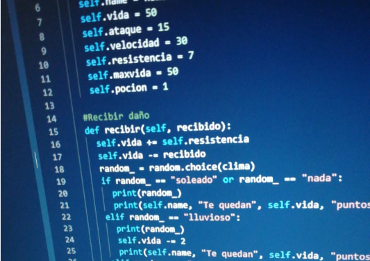

Llenguatge de Programació
Que és un Llenguatge de Programació?
Un Llenguatge de Programació és un llenguatge formal que especifica una sèrie d'instruccions perquè un ordinador produeixi diverses classes de dades. Els llenguatges de programació es poden utilitzar per als programes de joc en la pràctica algoritmes específics el control físic del comportament físic i lògic d'un ordinador.
Està format per un conjunt de símbols i regles sintàctiques i semàntiques que defineixen la seva estructura i el significat dels seus elements i expressions. Al procés pel qual s'escriu, es prova, es depura, es compila (de ser necessari) i es manté el codi font d'un programa informàtic es diu la programació.
Javascript
JavaScript és un llenguatge de programació JavaScript s'utilitza principalment del costat del client (és a dir, s'executa en el nostre ordinador, no al servidor) permetent crear efectes atractius i dinàmics en les pàgines web. Els navegadors moderns interpreten el codi JavaScript integrat en les pàgines web.
PHP
PHP és un llenguatge és usat principalment en interpretació del costat del servidor (server-side scripting), dissenyat especialment per a desenvolupament web i que pot ser incrustat dins de codi HTML. Generalment s'executa en un servidor web, prenent el codi en PHP com la seva entrada i creant pàgines web com a sortida. Pot ser desplegat en la majoria dels servidors web i en gairebé tots els sistemes operatius i plataformes sense cap cost.